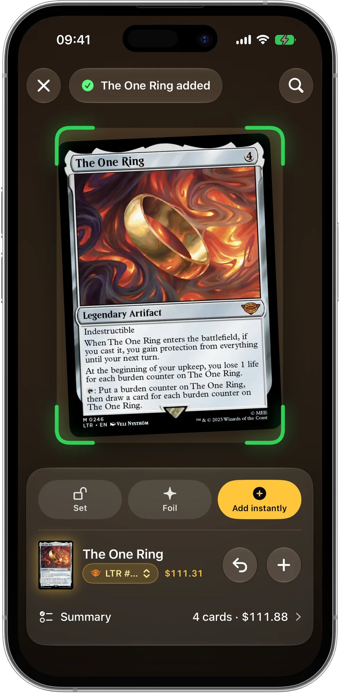

L'appli Magic qui connaît tes cartes
Scanne ta collection, construis des decks avec tes cartes et joue avec tes amis. Mote, ton expert IA des decks, fait les calculs.
Bientôt disponible surl'App StoreTéléchargement gratuit · iPhone et iPad · iOS 18 ou ultérieur
Collection
Vise. Scanne. C'est fait.
Carte après carte, sans t'arrêter : chacune rejoint ta collection avec son prix, et tu vois le total grimper.
- Scanner à la suite
- Édition et foil
- Prix à jour

Chaque carte
Tes cartes comme jamais.
Ouvre une carte et incline-la : les foils captent la lumière. Texte de règles, rulings officiels et prix de chaque boutique sont à portée de doigt.
- Effet foil
- Rulings officiels
- Prix en boutique
Trouve ton Commander
Le Commander fait pour toi.
Réponds à 12 questions sur ta façon de jouer. Mote choisit trois commandants, avec des listes petit budget, intermédiaire et top, et tu peux importer des decks bien classés en vrais tournois.
- 12 questions
- 3 budgets
- Decks de tournoi
Mote, ton expert IA
Un expert qui lit tes cartes.
Mote analyse ton deck et propose des échanges avec des cartes que tu as déjà. Un toucher et c'est fait. Il peut aussi construire un deck entier à partir de ta collection.
- Analyse du deck
- Construis-moi un deck
- Échanges avec tes cartes
Construction de deck
Des decks qui tournent.
Vois ton deck en piles, triées par coût. Touche une carte pour voir comment elle fonctionne avec le reste du deck, les combos auxquelles il ne manque qu'une carte et ce que tu pourrais jouer à sa place.
- Piles par coût
- Synergies et combos
- Alternatives
Decks
Teste-le avant de le mettre sous pochettes.
Pioche une main de départ, fais un mulligan, joue tes premiers tours. Vois tes chances de piocher des terrains, ta courbe et le prix des cartes qui manquent.
- Main de départ
- Mulligan
- Statistiques
Soirée jeux
Tout pour la table.
Un compteur de vie de 2 à 6 joueurs avec blessures de commandant, poison, monarque et initiative. Maintiens le dé, laisse-le rouler, et chaque partie arrive sur le téléphone de tes amis.
- Blessures de commandant
- Dé 3D
- Joue avec tes amis
Et ce n'est pas tout
Tout ce qu'il faut à un joueur de Magic, dans une seule appli.
- Les règles à tableLes Règles complètes et les rulings de chaque carte, hors ligne. Demande un verdict à Mote.
- Joue avec tes amisAjoute tes amis avec un code QR : parties partagées et classement du groupe.
- Tous les préconsLes decks préconstruits officiels avec leur description, prêts à importer.
- Decks de tournoiDes listes bien classées en tournoi Commander, via TopDeck.gg.
- Stats et combosCourbe, terrains, couleurs, combos et valeur de ton deck.
- Apporte tes cartesImporte depuis ManaBox, Moxfield, Archidekt, Delver Lens et d'autres.
- Classeurs, wishlist, échangesOrganise tes cartes et vois quelles éditions tu es en train de compléter.
- iCloud et 14 languesSynchronisée sur iPhone et iPad, dans ta langue et ta devise.
Gratuit pour toujours
- Collection, prix et scanner
- Compteur de vie et historique des parties
- Jusqu'à 7 decks construits
- Une question rapide à l'IA offerte chaque jour
- Ton premier « Trouve ton Commander »
ManaPal Pro Facultatif
- Mana inclus chaque mois pour Mote
- Stats avancées
- Decks et classeurs illimités
- Simulateur illimité
- Thèmes de l'app et parties sur mesure
Les actions IA utilisent du Mana, et tu vois toujours le coût avant qu'une action démarre.
Guides pour joueurs de Magic
Des réponses concrètes aux questions d'avant chaque soirée de jeu. Les guides sont pour l'instant en anglais.
Scanner ses cartes Magic avec l'iPhone
Numérise toute ta collection sans taper un seul nom.
Lire le guide (en anglais) →Combien vaut ma collection Magic ?
Repère les cartes de valeur et obtiens un total réaliste.
Lire le guide (en anglais) →Un deck Commander avec ta collection
Transforme tes cartes en un deck de 100 cartes qui tourne.
Lire le guide (en anglais) →Comment choisir son commandant
Un commandant adapté à ton style de jeu et à ton budget.
Lire le guide (en anglais) →Combien de terrains en Commander ?
Fini de rater ses poses de terrain, ou de ne piocher que ça.
Lire le guide (en anglais) →Points de vie et blessures de commandant
40 points de vie, poison et monarque sans prise de tête.
Lire le guide (en anglais) →
Questions fréquentes
ManaPal est-elle gratuite ?
Oui. ManaPal se télécharge gratuitement, et la collection, les prix, le scanner, les extensions, les decks préconstruits et le compteur de points de vie restent gratuits pour toujours, avec jusqu'à 7 decks construits. Les actions IA utilisent du Mana : une question rapide est gratuite chaque jour et ton premier « Trouve ton Commander » est offert. ManaPal Pro est facultatif et ajoute du Mana chaque mois, des stats avancées ainsi que des decks, des classeurs et des parties test illimités. En savoir plus (en anglais)
ManaPal peut-elle scanner les cartes Magic ?
Oui. Vise une carte avec l'appareil photo de l'iPhone : ManaPal la reconnaît, affiche son prix et l'ajoute à ta collection. Tu peux choisir l'extension, la marquer comme foil et continuer à scanner. En savoir plus (en anglais)
Comment connaître la valeur de ma collection Magic ?
Ajoute tes cartes à ManaPal en les scannant ou en important une liste : l'écran Collection affiche la valeur totale avec des prix à jour et son évolution dans le temps. En savoir plus (en anglais)
ManaPal peut-elle construire un deck Commander avec mes cartes ?
Oui. Avec « Construis-moi un deck avec mes cartes », Mote crée un deck Commander de 100 cartes en utilisant d'abord ta collection, et liste les quelques cartes qui manquent. En savoir plus (en anglais)
Comment choisir le bon commandant ?
Pars de ta façon préférée de gagner, de tes couleurs favorites et de ton budget. Dans ManaPal, le quiz « Trouve le Commander qui te correspond » pose 12 questions et propose des commandants en listes petit budget, intermédiaire et top. En savoir plus (en anglais)
Combien de terrains dans un deck Commander ?
La plupart des decks Commander jouent 36 à 38 terrains plus une dizaine de cartes de ramp. Moins avec une courbe basse, plus avec beaucoup de sorts chers. ManaPal affiche le nombre de terrains, la courbe de mana et les probabilités de la main de départ. En savoir plus (en anglais)
ManaPal a-t-elle un compteur de vie avec les blessures de commandant ?
Oui. Le compteur gère de 2 à 6 joueurs avec blessures de commandant, poison, monarque, initiative, Planechase et Archenemy, et enregistre chaque partie dans tes statistiques. En savoir plus (en anglais)
Puis-je importer ma collection depuis ManaBox ou Moxfield ?
Oui. ManaPal importe les collections depuis les fichiers CSV de ManaBox, Moxfield, Archidekt, Delver Lens, Dragon Shield, Deckbox, TCGplayer et Cardmarket, et les decks depuis Archidekt, Moxfield, ManaBox, MTG Arena ou une simple liste texte. En savoir plus (en anglais)
ManaPal peut-elle répondre aux questions de règles de Magic ?
Oui. Les Règles complètes officielles et les rulings officiels de chaque carte sont dans l'appli et fonctionnent hors ligne, et tu peux consulter plusieurs cartes à la fois pour voir comment elles interagissent. Pour une interaction délicate, « Demande à Mote » lit les règles et les rulings et te donne un verdict avec les règles sur lesquelles il s'appuie. En tournoi, c'est toujours le juge qui a le dernier mot.
Puis-je jouer avec mes amis dans ManaPal ?
Oui. Crée un profil en ligne gratuit, ajoute tes amis avec un code QR, un lien ou un code ami, et les parties que vous jouez ensemble apparaissent sur le téléphone de chacun, avec les stats de ton groupe de jeu. En savoir plus (en anglais)
Où sont enregistrés mes cartes et mes decks ?
Sur ton appareil et dans ton propre iCloud, synchronisés entre iPhone et iPad. Nous ne les voyons pas et nous ne les vendons pas. En savoir plus (en anglais)
ManaPal est-elle une appli officielle de Wizards of the Coast ?
Non. ManaPal est un Fan Content non officiel autorisé par la Fan Content Policy. Elle n'est ni approuvée ni soutenue par Wizards of the Coast. En savoir plus (en anglais)
Amène tes cartes à la table
ManaPal arrive bientôt sur l'App Store pour iPhone et iPad. Scanne tes premières cartes, construis ton prochain deck Commander et laisse Mote faire les calculs.
Bientôt disponible surl'App Store